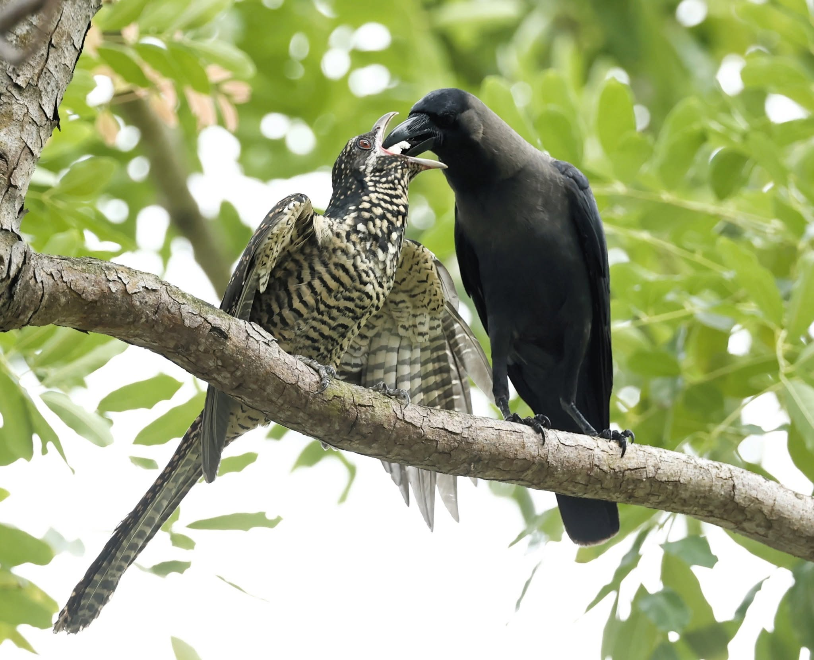
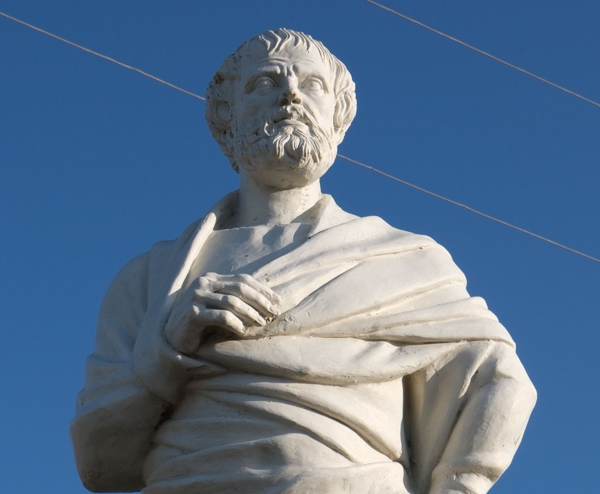
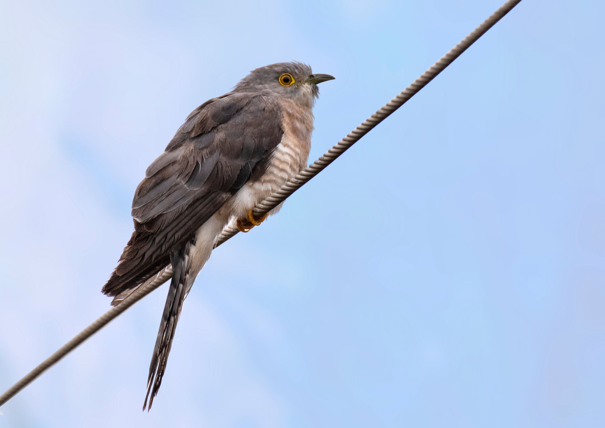
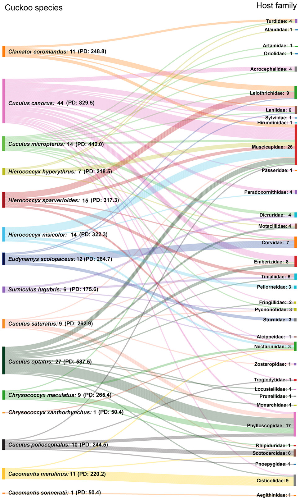
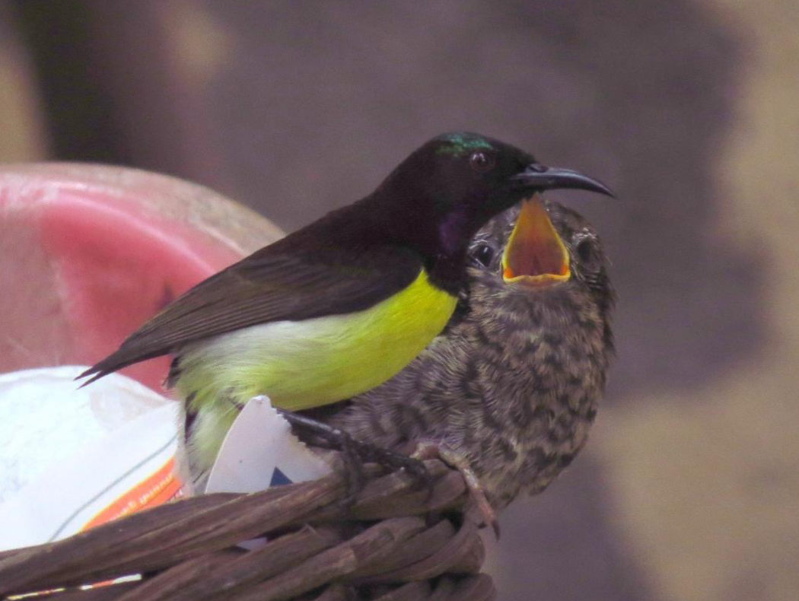
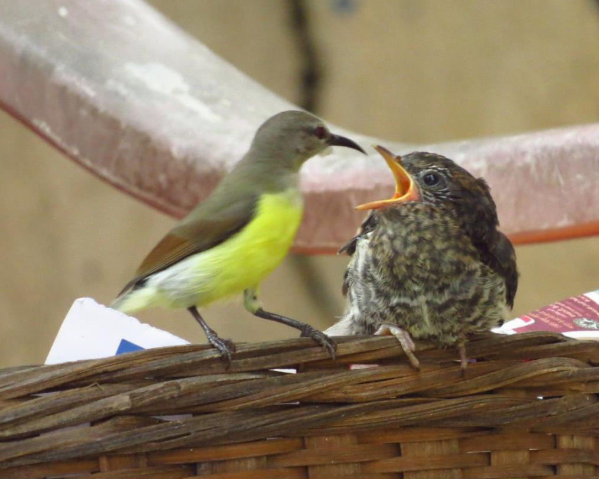
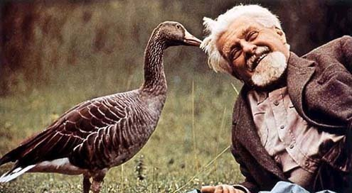
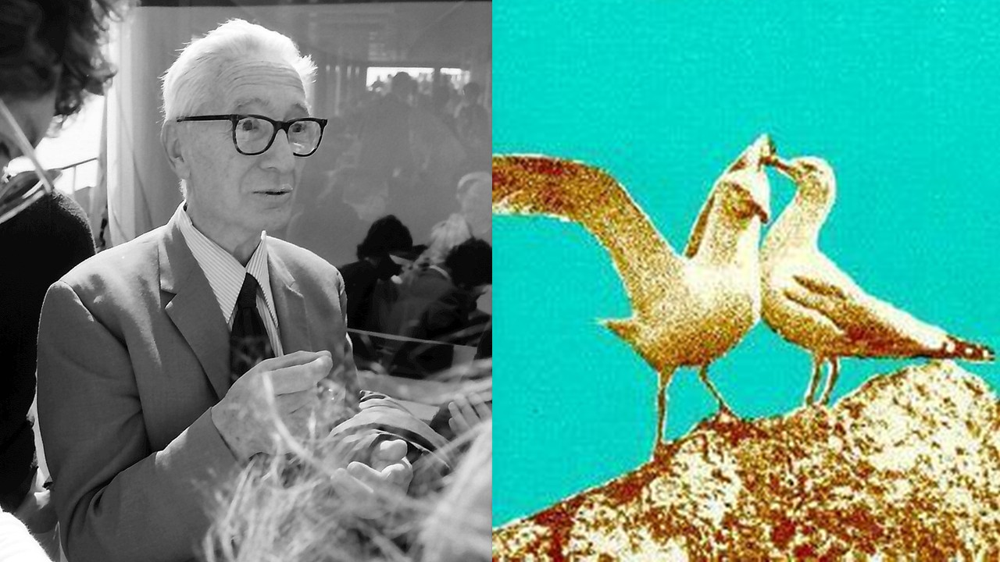
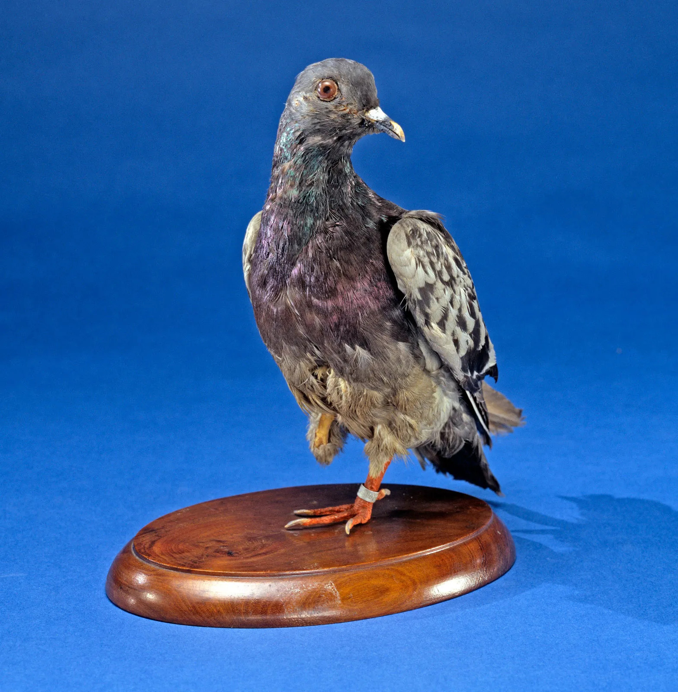
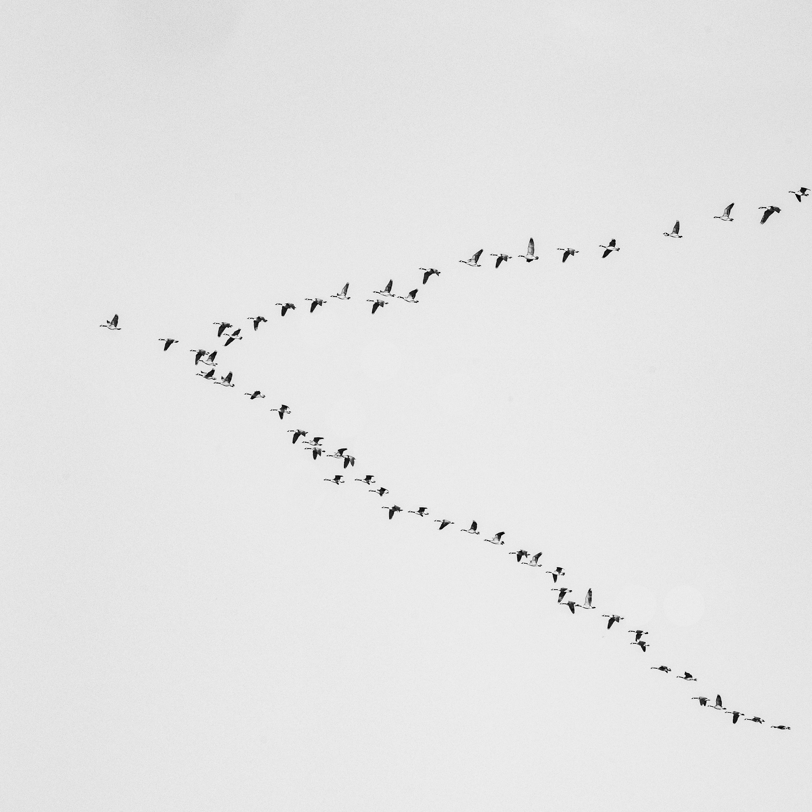

Objectives of this workshop
History of observing avian behaviour & migration develops into the science of asking why.
What bird is this?
What’s one behaviour this bird is famous for?

Brood parasitism
A reproductive strategy in which one species lays its eggs in another species' nest, leaving the host to raise its young.

We have been watching birds for a long time
More than 2,000 years ago, Aristotle described cuckoos laying eggs in the nests of other birds.


142 host species exploited by 15 cuckoo species!!
The study identifies 17 cuckoo species, with 15 confirmed as brood parasites exploiting an extensive network of 142 host species spanning 74 genera and 34 families within the passerine assemblage.

As small as a sunbird!
The authors opportunistically sighted both a male and female purple-rumped Sunbird, Leptocoma zeylonica, feeding a hatchling of the common hawk-cuckoo, Hierococcyx varius.


Source: Vinjari & Vinjari, 2026
A Nobel Prize for Behavioural Ecology.
In 1973, Karl von Frisch, Konrad Lorenz and Nikolaas Tinbergen shared the Nobel Prize. Their methods primarily involved observing behaviour.

Source: The American

Source: Wikipedia
Sometimes the applications fly beyond conservation.
Homing pigeons
Carrier pigeons, including the famous Cher Ami, carried messages during wartime. Their remarkable homing ability has motivated scientific questions about orientation and navigation.
V-formations
Studies of birds flying in formation help researchers investigate aerodynamics, flight coordination and the potential energetic benefits of positioning.


Gather the flock — and let's begin!

Behaviour & Migration
Behavioural questions, ethograms, migration patterns and why birds migrate.
Open presentation ↗
Fieldwork & Methods
Turn research questions into observations, sampling plans and field methods.
View outline ↗Research Design & Data
Build a research question and consider replication, bias and interpretation.
View outline ↗